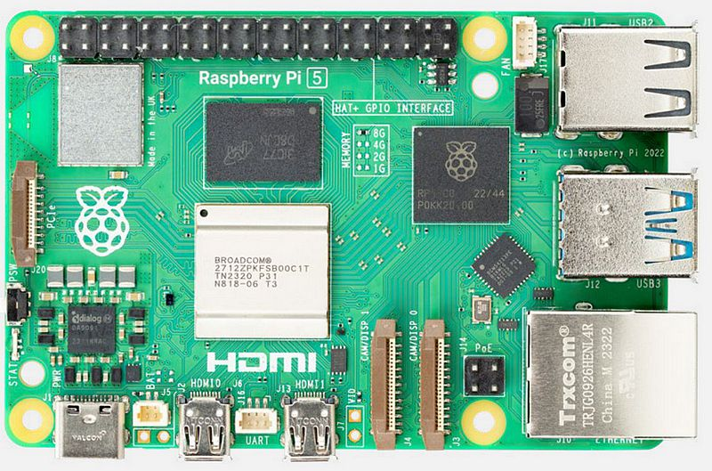

Raspberry Pi configuration
{kind=link}

Requirements
Your dev PC connected to your home wifi network
Your Raspberry Pi 5
A 500Go external SSD drive
Configuration
Setup the SSD drive
Download Raspberry Pi Imager
Select Raspberry Pi 5 as the Device
Select “Other general purpose OS” -> “Ubuntu” -> “Ubuntu Server 24.04.3 LTS (64-bit)” as the OS
Select your SSD drive as the storage device
Chose dragonfly as the hostname
Set the username to dragonfly and chose a password
Keep the default settings for the wifi configuration, your Raspberry Pi will connect to your home wifi network
Enable SSH and allow password authentication
Click the write button and wait for the process to finish
First boot
Plug the SSD drive to your Raspberry Pi and power it on
Power on the Raspberry Pi
Find its IP address on your home router admin interface
SSH into your Raspberry Pi from your dev PC
Edit /etc/netplan/50-cloud-init.yaml to set a static IP address on your home network
network:
version: 2
wifis:
wlan0:
optional: true
dhcp4: no
addresses: [192.168.1.10/24]
gateway4: 192.168.1.254
nameservers:
addresses: [1.1.1.1,8.8.8.8]
regulatory-domain: "FR"
access-points:
"Freebox-70E8D0":
auth:
key-management: "psk"
password: "12e99350af77b50358b8aeb360c63dbfd037c80635d5a11bd00c903bd72bd447"
Apply the netplan configuration
sudo netplan apply
SSH into your Raspberry Pi using its new static IP address
Setup hosts
Edit the /etc/hosts file to add the following line :
dev-pc 10.0.0.3
Install and setup Docker
Follow this guide to install Docker on your Raspberry Pi : Install Docker Engine on Ubuntu
To make sure you can use Docker without sudo
sudo usermod -aG docker $USER
newgrp docker
Créer le fichier /etc/docker/daemon.json et y écrire
{
"insecure-registries" : [ "dev-pc:5000" ]
}
Install and setup OpenVPN
Install OpenVPN Client
sudo apt update
sudo apt install openvpn
Setup autostart
Uncomment the following line from /etc/default/openvpn
AUTOSTART="all"
Download your .ovpn file from your OpenVpnAS instance on your Dev PC
scp it in your Raspberry Pi under /etc/openvpn/client.conf
Enable and start the OpenVPN service
sudo systemctl enable openvpn@client.service
sudo systemctl start openvpn@client.service
Generate UDEV rules
When a USB device is plugged, it can be assigned to /dev/ttyUSB0, /dev/ttyUSB1, /dev/ttyUSB2… UDEV rules allows you to chose the name of the file to which a device will be assigned, we need this so that our drivers can find their devices.
Create the following file : /etc/udev/rules.d/dragonfly.rules
Write the following content :
KERNELS=="ttyUSB*", SYMLINK+="imu"
KERNELS=="ttyACM*", SYMLINK+="gps"
Run the following commands to apply the rules :
sudo udevadm control --reload-rules
sudo udevadm trigger
Connect to your 4G dongle
TODO